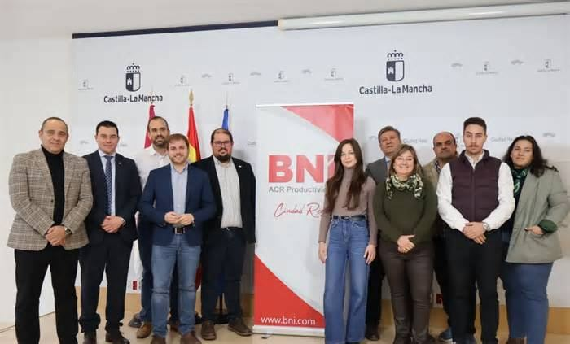

Castilla-La Mancha destina 15 millones de euros a impulsar las pymes y destaca el crecimiento empresarial en Ciudad Real

El delegado provincial de Economía, Miguel Ángel Díaz Brazales, pone en valor la creación de 667 empresas en los nueve primeros meses de 2026 durante la presentación de la VI Gala Benéfica y Premios B ...
El delegado provincial de Economía, Miguel Ángel Díaz Brazales, pone en valor la creación de 667 empresas en los nueve primeros meses de 2026 durante la presentación de la VI Gala Benéfica y Premios B ...
Noticia publicada por Cuadernos Manchegos. Consulta el artículo original en Cuadernos Manchegos para más información.